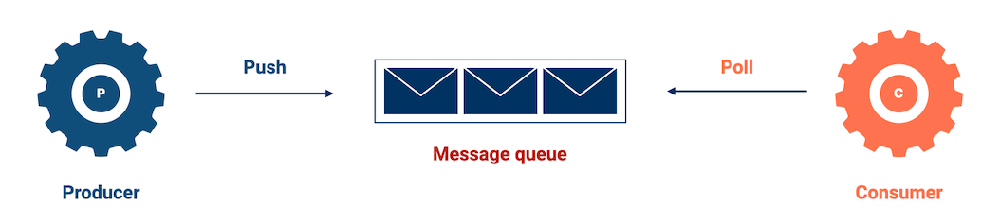
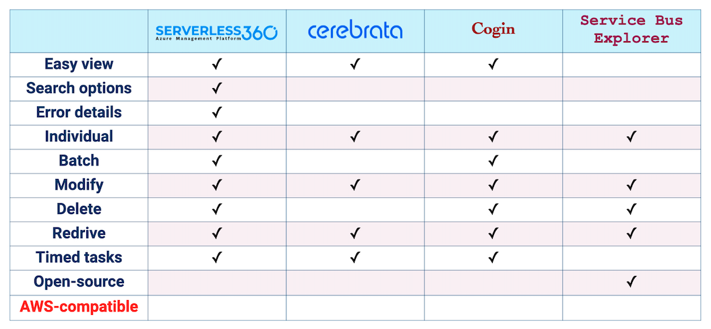
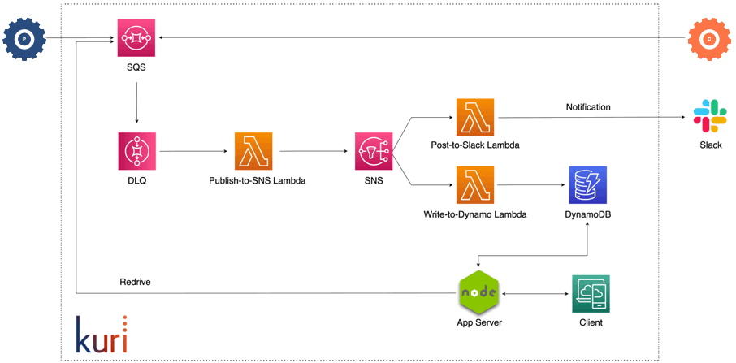
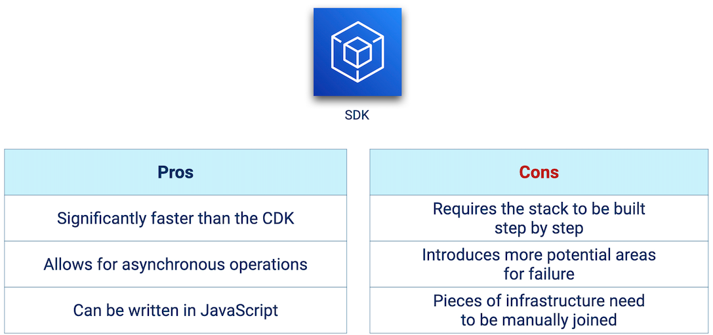

An open-source Dead-Letter Queue-as-a-Service
for distributed applications
deployed on an AWS infrastructure.
Easy to Manage & Deploy
Easy to Manage & Deploy
Kuri abstracts away the complexity of working with cloud
infrastructure by automating the deployment process.
Developer Tools
Modular and Flexible
Kuri provides developers with a dashboard to view,
update, delete, and redrive dead-lettered messages.
Case Study
1. Introduction
1.1 Microservices
When building a new application, a monolithic architecture is often
chosen for the initial build. A monolithic application consists of one
large codebase that includes all of the application components. It is
deployed as a single package and it runs in a single process. While there
are many benefits to structuring an application this way, there are also
some significant drawbacks. For example, any modifications to the codebase
necessitates the deployment of a rebuilt application. Additionally, if any
parts of the application need to be scaled up, the entire application will
need to be scaled. These drawbacks of the monolithic architectural style have
led to the popularity of microservices architecture where the codebase is split
into several functional units of code. Each unit represents a service and it is
independent of the other services in that it can be deployed and scaled separately.
The microservices architecture also gives each service the flexibility to use the
programming language and data storage system that are most suitable for its function [1].
Fig 1.1 Monolithic vs microservices architecture.
Using microservices architecture however does increase the complexity of communication
within the application. While a monolithic application can use method/function invocations
for communication between different parts of the application, the distributed nature of
microservices calls for a different approach.
1.2 Microservices Communication
Microservices can communicate synchronously via HTTP request/response cycles. However,
to maximize the benefits of the decoupling nature of the microservices architecture,
asynchronous communication can be used. One of the ways to implement asynchronous
communication between microservices is to use a message queue that sits between the
services [2]. A message is the data transported between the sender service and the receiver
service. The message queue holds the messages that are waiting to be processed by the
receiver service. The service that adds messages to the queue is called a producer and
the service that receives messages from the queue is called a consumer.
One of the main benefits of placing a message queue in between two services is that the
services can be decoupled, that is, the processing of a message on the consumer side becomes
independent from the production of the message on the producer side. The producer does not
need any acknowledgement from the consumer, the producer’s only concern is to get the message
delivered to the queue which handles the message from that point onwards. This adds more
resilience to the entire system in that if the consumer fails for some reason, the producer
is not affected. The producer can continue to add messages to the queue which will get
processed when the consumer recovers from the failure.

Figure 1.2 Using a message queue to implement asynchronous communication between microservices.
1.3 Message Queues
There are multiple options available for developers in need of a message queue system.
Some open-source options include RabbitMQ, Apache ActiveMQ, and Apache Kafka whereas
IBM MQ and AWS SQS are proprietary systems. There are some differences in the way these
message queues are implemented and how they operate, but in general, they all provide a
way to temporarily store messages as well as an interface that allows producers and
consumers to connect to the queue.
A widely used cloud-based option, AWS Simple Queue Service (SQS) is a fully managed
messaging service that provides unlimited storage of messages, high availability,
and data encryption. An SQS queue is a distributed messaging system, meaning that
the queue is distributed over several AWS servers to allow for redundant storage of
the messages within the queue. Due to this distributed nature, standard SQS queues
support at-least-once delivery, best-effort ordering of messages, and a nearly unlimited
number of API calls/sec. A standard queue would be a good option for an application that
doesn’t require strict ordering of messages and can handle the deduplication of messages
within the application code.
1.4 Standard SQS Message Handling
When a message is sent to a standard SQS queue, it is serialized into JSON format.
The message must include a message body and can optionally include up to 10 user-defined
message attributes that provide additional metadata about the message content or purpose.
Once the message is received by the queue, it will be assigned a unique identifier and the
queue will keep track of important metrics for the message. One example is the Receive count,
which increases every time a consumer attempts to process the message. The queue also keeps
track of the Message retention period which determines how long a message can stay in the
queue. If the message has not been successfully consumed by the end of this period,
it will be deleted from the queue.
For a consumer to receive a message stored in a queue, the consumer must first poll the queue
to probe for available messages. If a message is available, the consumer will attempt to process
the message. During this time, the message stays in the queue but remains hidden from all
consumers for a set amount of time. This Visibility Timeout should allow the consumer enough
time to fully process the message and send a response to the queue if it is successful. If the
queue receives the response from the consumer, it deletes the message from the queue. If no
response has been received by the queue when the Visibility Timeout expires, the message becomes
visible again to all consumers.
Fig 1.3 The Visibility Timeout gives the consumer time to process the message.
An issue may arise when the consumer takes longer to process the message than the Visibility
timeout is set for. In that case, even if the consumer eventually completes processing the
message, the message has already been made visible again in the queue, potentially leading
to multiple processing of the same message. In this case, it would be important for the
consumer application code to handle the deduplication of messages.
1.5 Message Failure
There are several reasons why a message could fail to be consumed. For one, since the consumer
must communicate with the queue over a network, any network errors could lead to message failure.
Other consumer-related failures might be due to a consumer dependency, for example, if the data
store the consumer depends on has an outage. These types of failures are temporary and once the
failure has been repaired, the message should be able to be processed by the consumer.
Other failures are due to more permanent errors such as an invalid message format or a bug in the
consumer application code that leads to the inability to process a valid message. These errors lead
to what has been called a “poison message”. After every failed attempt to process the message, it becomes
visible again in the queue and the consumer is bound to retry processing it. While the poison message
stays in the queue, it wastes resources on retries that will never be successful. This cycle continues
until the Message Retention Period expires for the message.
2. Use Case
2.1 BuyMe
So what does this all mean in the real engineering world? Let’s look at the fictional company BuyMe.
BuyMe is a young but growing e-commerce business. Recently, the engineering team advised the
higher-ups that the business application would benefit greatly in terms of organization, reliability,
and speed by adopting a microservices architecture instead of the current monolith. One part of this
transition is the placement of queues for between-service communication to keep the services as
decoupled as possible. For the company to work well and processes to run smoothly, the service that
receives the orders must be able to forward the details of these to the stock inventory service. The
communication between the two services should be able to accommodate a growing company, allowing for
high throughput. However, the messages do not need to be delivered in the same order to the inventory
service that they came into the ordering service. For these reasons, the BuyMe team decided that an
AWS standard SQS queue would be a good choice for the job.
Fig 2.1 BuyMe implements a standard SQS queue for communication between the ordering and inventory microservices.
After an extended period of testing and development, the transition was
completed and the company confidently moved its new AWS architecture into production.
2.2 Flooded Message Queue
Soon after, though, customer service tells the engineering team that they are receiving
complaints about orders not being fulfilled. When the team checks the queue between the
ordering and inventory services, there seem to be many more messages than they would
expect to see. They discover that a considerable number of messages still in the queue
should have been processed by the inventory service already.
Fig 2.2 Poison messages accumulate in the message queue.
They could just delete the unprocessed messages but that would mean orders would go
unfulfilled causing customer dissatisfaction and profit loss. To try to alleviate the
issue and find out what could be causing it, they decide it is time to add a Dead Letter Queue.
3. Dead-Letter Queues (DLQs)
3.1 What is a DLQ?
A dead-letter queue (DLQ) is “a queue to which a source queue can send messages if the main
queue’s consumer application is unable to consume the messages successfully” [3]. In other words,
we can think of a DLQ as a backup queue that captures all messages that fail to be processed
from the main queue by the consumer application. Configuring a DLQ ensures that unprocessable
messages will not remain in the queue and no messages will be lost during communication between
services.
Fig 3.1 AWS definition of a dead-letter queue.
3.2 How is a DLQ configured?
When configuring a DLQ, it is imperative to specify the conditions under which the main queue
moves messages to the DLQ.
As mentioned earlier, the main queue keeps track of important metrics for each message. One of
these is the Maximum receives count which is set by the user and represents the maximum number
of times that a consumer can try to process a message. When the Maximum receives count is exceeded
for a message, the message is moved from the main queue to the DLQ.
The appropriate value for the Maximum receives setting depends on the user’s message processing
requirements and can affect the efficiency of the main queue. Setting the number to a low value
such as 1 would mean that a single failure to process the message by the consumer will cause the
main queue to move the message to the DLQ. This policy doesn’t allow for any processing retries by
the consumer and might prematurely send a message to the DLQ which could have been successfully
consumed with a further reattempt. Setting the number to a high value such as 20 keeps the message
in the main queue and enables the consumer to retry processing it multiple times. Although this
might initially seem like a good idea, imagine there being hundreds of messages queued to be retried
by the consumer at a rate of 20 attempts each! Having such a large number of messages that the
consumer repeatedly fails to process and delete from the main queue might increase costs and place
an extra load on the hardware. Moving failing messages to a DLQ after just a few processing attempts
would allow the consumer enough chances to retry processing a message and would also avoid blocking
the queue for a significant amount of time.
Fig 3.2 Configuring the Maximum receives setting for the main queue.
3.3 Importance of DLQs
When a messaging system lies at the heart of application architecture, the DLQ is a crucial part of
a coherent plan for dealing with messages that fail to be processed by the consumer application.
Several key factors contribute to the importance of a DLQ. Firstly, it helps manage the lifecycle of
unconsumed messages which is a workflow of possible paths that a failed message can take. It starts
with publishing the message, retrying to process it in case of temporary failure on the side of the
consumer, having a named location for unprocessed messages to go to, and providing options for handling
these failed messages. In addition, a DLQ provides debugging capabilities. By offering a peek into
messages, their content can be analyzed to diagnose application issues that might need to be addressed
centrally. With the provision of a DLQ, failed messages always have a place to be stored minimizing data
loss. Ultimately, a DLQ isolates unconsumed messages to help users determine why their processing didn’t
succeed. It is a source of error-handling strategies ranging from simple reprocessing of messages by
the main queue to advanced analytics of message data for real-time insights.
Fig 3.3 The primary benefits of DLQs.
3.4 The AWS DLQ
Now that our engineering team at BuyMe has the DLQ in place and can view the poison messages, they are
ready to start debugging the problem. To begin with, they would like to examine the failed messages in
the DLQ. They head over to the AWS SQS console to take a look.
In the console, they are met with some obstacles. One issue has to do with what is referred to as the
Message retention period. The Message retention period dictates the lifetime for each message that enters
a queue. This number will not get reset when a message is sent to a DLQ but continues to count down from
the time it was sent to the main queue. When this period expires, the message will be permanently deleted
from the DLQ. This is a red flag for the BuyMe team as they do not want any orders to get deleted before
they are properly fulfilled!
Fig 3.4 The AWS SQS console with the Message retention period highlighted.
Another issue is that the entire list of messages is not immediately available for viewing. Instead, the
BuyMe team discovers that they must manually poll for it. While the team can change the polling settings
for the DLQ, depending on these settings, they still might not be able to see all the messages with each
polling attempt, as only a random subset of them is fetched. Once a message has been fetched, they can
inspect the message body and attributes.
Fig 3.5 AWS DLQ console manual polling fetches a random subset of messages in the DLQ.
A first look makes the BuyMe engineers suspect that the messages are failing due to character-encoding
errors in the SKU number. To debug this issue, they would ideally like to manually modify each problematic
message and re-drive it to the main queue to see if the changes allow the message to be successfully processed
by the inventory service. Although the console provides re-drive functionality - the team would be able to
send messages from the DLQ back to the main queue so the consumer can retry processing them - it does not
offer the option to modify the messages before the re-drive. Even if they were able to modify the messages,
the AWS SQS console only allows batch re-drive and not individual message re-drive.
Fig 3.6 Viewing a DLQ message in the AWS console. Modifications of the message are not supported.
The BuyMe engineers realize that the limited built-in functionality of the AWS DLQ does not meet their
requirements. They require a tool that will allow them to view all messages in the DLQ, both as a list and
individually, as well as allow them to edit and re-drive individual messages back to the main queue. They
presume that such a tool must exist and start their search for it.
4. Existing solutions
4.1 SaaS and Open-source
It becomes apparent to the team at BuyMe that they are not the only ones frustrated by the limitations of
built-in DLQ functionality. There are several tools available for making it handy to monitor dead-lettered
messages in testing, development, and production environments. A leading platform in this area is Serverless
360 [4], a service rich in features that fulfill a large number of requirements:
Easy viewing of messages
Search options for filtering
Accessing the reason for message failure
Operating on both individual messages and batches
Modifying, deleting, and redriving messages
Setting a timer for particular operations
While other solutions such as Cerebrata, Cogin, and Service Bus Explorer [5, 6, 7] do not have the full range of features
that Serverless 360 offers, they do check the boxes that our team at BuyMe is interested in. However, 3 of the
4 tools are only available for purchase and unfortunately, none of them is compatible with AWS.
There are also self-deployable options for realtime infrastructure
which accordingly offer more control, albeit at the potential
expense of more configuration and deployment issues.

Fig 4.1 Existing DLQ-monitoring solutions.
The BuyMe team is in a bit of a bind. Currently, they are restricted by the offerings of the AWS DLQ but can’t make
use of any of the available DLQ monitoring tools discussed above, missing out on extensive functionality.
Fig 4.2 Comparison of AWS DLQ console functionality with existing solutions.
So what options does the team at BuyMe have when they discover that a message has failed to be processed and
has been moved to the AWS DLQ? Currently, they are restricted by the offerings of the AWS DLQ and can’t make
use of any of the available DLQ monitoring tools we discussed above, missing out on extensive functionality.
This is where Kuri comes in.
5. Kuri
5.1 Introducing Kuri
Kuri is an open-source, Dead-Letter Queue-as-a-Service for small distributed applications that use AWS
infrastructure. When we compare Kuri with the functionality of the AWS DLQ and the capabilities of the existing
monitoring tools, Kuri meets the majority of the requirements and is compatible with AWS queues.
Fig 5.1 Comparison of Kuri with existing solutions.
Aside from being open-source, there are many reasons why Kuri would be a great tool for the BuyMe team.
First, by providing just a handful of responses to command line questions posed by Kuri, a pipeline incorporating
the main queue and DLQ will be set up for them. They even have the option of setting up both from scratch or
providing the details of an existing main queue and letting Kuri set up a DLQ on their behalf.
The user is required to complete three steps to use Kuri - install the Kuri package, deploy it and view the
dashboard. Within a couple of minutes, Kuri is configured and ready to use!
Finally, the easy-to-use Kuri dashboard will provide them with the ability to:
Access the messages without the need for polling
Sort messages based on their timestamp or body text
Modify the body and attributes of individual messages
Delete and re-drive individual messages or perform batch delete and re-drive operations
Fig 5.2 Kuri features.
5.2 Kuri Installation
There are three steps our team at BuyMe will take to install and use Kuri. The first step is to install
the NPM package globally. It was our goal from the beginning of the project to make the installation of Kuri
as seamless as possible. The BuyMe team will not need to manually update configuration files or make any adjustments
once the set-up is complete.
Fig 5.3 Kuri installation.
Once installation is finished, the commands available in the Kuri package can be pulled up, which currently are the deploy and view commands.
Fig 5.4 Kuri commands.
When deploying the application, our team at BuyMe will choose for Kuri to create a DLQ only as they already have
the main queue. They’ll provide its URL and their AWS region and instruct Kuri to send notifications to their Slack
channel. Finally, they’ll confirm the configuration options and Kuri will be deployed through the provision of the
various AWS resources.
Fig 5.5 Kuri deployment.
And that’s it, Kuri is deployed, leaving them with the final step of viewing and interacting with the Kuri dashboard.
Fig 5.6 Kuri view command used to start the Kuri dashboard.
5.3 Kuri Dashboard
When opening the dashboard, the team can first see a summary of the current state of the DLQ at the top left corner.
Each message with its id, timestamp, and body is displayed in a table format. There is functionality available for
sorting and viewing the messages according to the message timestamp and body.
Fig 5.7 Overview of the Kuri dashboard.
They can also re-drive all the messages back to the main queue for one more attempt at processing by the consumer. If
the attempt is unsuccessful, the messages will reappear in the DLQ.
For individual messages, the BuyMe team has several options through the action dropdown. They can view the message
details which include the id, timestamp, body, and some optional user-provided properties. If required, they can
permanently delete the message from the queue.
Fig 5.8 The Kuri dashboard action dropdown menu allows the user to view the details of a message, delete a message or redrive it back to the main queue.
They can also edit the message and save the updated version back in the DLQ. Most importantly, after editing the
message they have the option to re-drive the message back to the main queue so that the consumer can retry processing it.
Fig 5.9 Editing a DLQ message using the Kuri dashboard.
Finally, they can batch-delete the messages if they do not need to perform any further processing.
We’ve explored the requirements of the BuyMe team that Kuri satisfies and how they can use it. Now it’s
time to take a deep dive into how we built Kuri.
6. Architecture and Implementation
6.1 Kuri High-level Architectural Components
The Kuri architecture can be viewed as several high-level components that handle different responsibilities in
the management of dead-lettered messages as seen in figure 6.1. Throughout the next few sections, we will break
down each high-level component into the AWS resources that make up the component. We will discuss the relationship
between those resources and how they function together to fulfill the responsibilities of the component.
Fig 6.1 Kuri high-level architectural components.
6.2 Inter-Service Communication
The Inter-Service Communication component consists of 3 resources: the user’s producer and consumer flanking an
AWS SQS Queue. The queue serves to handle communication between the producer and consumer.
Producers and Consumers
The producer can be any service within a distributed system or microservices architecture that needs to communicate
with other services for asynchronous tasks. The asynchronous communication allows for time-consuming and non-urgent
tasks to be handled in the background and can decrease user response time.
On the other hand, the consumer can be any service that needs to access messages from a producer service. It’s
important to note that the consumer can only access messages that it has been granted permission for.
AWS Simple Queue Service (SQS)
The producers and consumers are connected by an SQS queue which is a fully managed messaging queue service that
enables the user to decouple and scale microservices, distributed systems, and serverless applications.
AWS offers two types of SQS queues. As mentioned earlier, the standard SQS queue provides maximum
throughput, best effort-ordering, and at-least-once message delivery. This means that messages can
be provided to the queue at a faster rate, the order is not a priority, and the delivery of duplicate
messages may occur. In addition to the standard queue, AWS also offers a First-in-first-out (FIFO)
queue that is designed to guarantee that messages are processed exactly once in the exact order
that they are sent to the queue. The guarantees of FIFO queues come with the tradeoff that they
support a much-limited throughput compared to a standard queue.
We decided to build Kuri to serve a user with a need for a standard SQS queue. A typical Kuri user would
require a queue that can handle high levels of message volume and a robust dead-letter management tool.
On the other hand, a user that has opted for a FIFO queue is likely to need exact ordering of messages and
therefore unlikely to need the re-drive functionality provided by Kuri.
At this point in our infrastructure, messages will be sent from the producer to the queue, the consumer will
poll for messages and try to process them. But what if messages are failing to be consumed?
Fig 6.2 Producer, Simple Queue Service, and consumer.
6.3 Failed Message Handling
This brings us to the next component in our infrastructure, the Failed Message Handling Component. This
component consists of the Dead-letter Queue which is directly attached to the main queue.
Simple Queue Service Dead-Letter Queue
As mentioned earlier the AWS-provided Simple Queue Service DLQ is designed to capture messages that
cannot be processed or consumed successfully by the consumer service. When Kuri is configured it provides
the DLQ that will be automatically configured to the user's main queue. This is done by creating an SQS
Queue, setting it as a DLQ, and providing it the AWS Resource Name of the main queue.
Kuri has two different queue configuration options available for developers. The first option is the “Main
Queue and DLQ” option - where the developer configures Kuri to provide a brand new AWS queue and its DLQ.
This option is suitable for developers who are starting a new project or have an existing project that needs a
queue. The second queue configuration option is the “DLQ Only” option, suitable for developers who already
have a project with an existing queue and would like to add the Kuri DLQ to their infrastructure.
In terms of design decisions for the DLQ, we decided to use an SQS DLQ to collect failed messages since the
provided AWS DLQ performs this function very efficiently. The DLQ opens the message pipeline for the rest of
the Kuri infrastructure and allows Kuri to provide additional DLQ functionality.
At this point, the failed messages are being collected in the DLQ but what do we do with these messages? We
need some way of alerting the developer of these messages and providing them a way to interact with them and
possibly resubmit them to the main queue.
Fig 6.3 SQS main queue and Dead-Letter Queue.
6.4 Fan-out
The Fan-out component is responsible for transporting a message from the DLQ and providing separate routes for
the distribution of the message to different resources. It consists of a Lambda that sends the message to a
Simple Notification Service topic and two Lambdas that subscribe to the topic. We will explore each of these
resources and their responsibilities in the next few sections.
AWS Simple Notification Service (SNS)
To begin with, the Simple Notification Service is a fully-managed messaging service for both application-to-application
and application-to-person communication. Kuri makes use of both of these avenues.
The main design decision that needed to be considered for SNS is whether to use a standard or FIFO SNS topic.
We decided to use a Standard SNS topic because it provides the qualities required to handle the potentially high
volume of dead-letter messages coming from a standard SQS queue. In addition, the subscription protocols available
for an SNS topic were an important consideration. While FIFO SNS topics only offer the SQS subscription protocol,
the standard SNS topic allows the subscription of Lambdas by using the Lambda protocol.
The SNS receives a message from the publish-to-SNS Lambda and passes a copy of it out to its subscribers. During
deployment, Kuri creates an SNS topic and adds two subscribers, the post-to-Slack and the write-to-Dynamo Lambdas.
Fig 6.4 Partial Kuri architecture focused on Simple Notification Service.
AWS Lambdas
Before going into the specific functionality of the Lambda resources attached to the SNS topic, let’s examine the
properties of Lambdas. Lambda is a serverless compute service from AWS that allows the user to execute code without
provisioning servers. Lambda functions can be invoked in response to certain triggers making them event-driven.
In addition, Lambda functions can scale with the workload by concurrently invoking more instances of the function when
needed. This ability to continuously scale is perfect for Kuri because dead-letter messages can come in at unexpectedly
varying rates. This rate would depend on the number of producer services connected to the main queue and the amount of
traffic coming into the application.
Fig 6.5. Lambda and Lambda handler code snippet.
Publish-to-SNS Lambda
The publish-to-SNS Lambda is responsible for polling the DLQ for messages. The code within the Lambda will
reformat the message structure from SQS formatting to SNS formatting which varies slightly. At that point,
it will pass the message to the SNS topic for distribution to multiple other resources.
Fig 6.6. Partial Kuri architecture focused on the Publish-to-SNS Lambda.
Post-to-Slack and Write-to-Dynamo Lambdas
Both the Post-to-Slack and Write-to-Dynamo Lambdas subscribe to the SNS topic. They also add a timestamp
to the message, ensure that the message attributes are formatted correctly, and pass the message to either Slack or DynamoDB.
While it would be possible to have one Lambda passing a message to both Slack and DynamoDB, we decided to implement two
Lambdas that subscribe to the SNS topic. This decision follows the best practice of the single responsibility principle
for functions and provides the opportunity for expanding functionality in the future by adding another Lambda to subscribe
to the SNS topic.
Fig 6.7. Partial Kuri architecture focused on the Post-to-Slack & Write-to-Dynamo Lambdas.
6.5 Notification
The next component, Notification, is one of two branches of the Fan-out component. This component consists of Slack which
allows immediate dead-letter message notifications to be sent to the Kuri user.
Slack
Slack is a messaging program for team and organization communication. Kuri offers the optional feature of sending
DLQ notifications to the developer’s preferred Slack channel. This is set up by the developer by creating a Slack
App using the Slack API interface. Once created, the developer can supply the provided Slack webhook path to Kuri
during the initialization and configuration process before deployment.
Once this is set up, any messages that arrive in the developer's DLQ will trigger a notification within their Slack
channel of choice. The notification will identify itself as a Kuri notification and provide insights about the DLQ
message such as the main queue name, message body, timestamp, and message attributes.
This is especially convenient for developers who would like to closely monitor failed messages in a development
or production environment without having to constantly keep an eye on the Kuri dashboard. These push notifications
can help developers keep the mean time to resolution down in the case of any issues relating to failed messages.
Fig 6.8 Partial Kuri architecture focused on Slack.
6.6 Persistence
The second component that branches from the Fan-out component, Persistence, consists of DynamoDB which stores
all of the dead-letter messages.
AWS DynamoDB
To provide the ability for developers to view, edit, delete or re-drive their dead-letter messages back to the
main queue, the messages need to be stored in a persistent datastore.
The first design decision for Kuri’s datastore was to decide between the NoSQL and SQL database systems.
We decided to go with a NoSQL over a SQL database since the dead-letter messages will already be in JSON
format and need to remain in JSON format to be re-driven back to the main queue. NoSQL databases are far
more suitable for storing and working with JSON data.
AWS offers many different options for NoSQL databases, including DynamoDB; a fully managed, serverless,
key-value NoSQL database designed to run high-performance applications at any scale. Using DynamoDB allows
Kuri to store DLQ messages without compromising the scalability and throughput of the entire application.
Fig 6.9 Partial Kuri architecture focused on DynamoDB.
With the dead-letter messages safely stored in DynamoDB and Slack notifications established, how can a
Kuri user take action when they receive a DLQ message notification? This brings us to the final component, User Interaction.
6.7 User Interaction
The User Interaction component provides the final functionality needed for the Kuri user to be able to view,
modify, and re-drive dead-letter messages. The two-way relationship between the User Interaction component and
the Persistence component allows for querying the message database. The User Interaction component also has a
one-way relationship with the Inter-service Communication component as it provides an API route for messages to
be re-driven back to the main queue.
Application Server
The application server is built primarily with Node.js and the Express framework. This combined with AWS’s DynamoDB
SDK allows Kuri to provide RESTful API routes that are consumed with the React-built dashboard.
Fig 6.10 Kuri architecture focused on the Application Server and Client.
In terms of design decisions for the application server, we decided to go with REST APIs as we needed to interact
with the database and provide the developer with a dashboard that makes it easy to interact with their DLQ messages.
6.8 Kuri Architecture
This brings us to the end of our high-level components and Fig 6.11 shows a diagram of the Kuri Architecture with all
the resources discussed above. The diagram depicts the traversal of a message within the architecture. A message
originates from the producer service in the top left corner which pushes it to the main SQS queue. The message could
either be successfully consumed by the consumer service, or the message could fail and get sent to the DLQ.
The publish-to-SNS Lambda polls the DLQ and passes the message to the SNS topic. The SNS topic sends a copy of the
message to the post-to-Slack and write-to-Dynamo Lambdas. Each Lambda passes a copy of the message to its respective
endpoint, either Slack or DynamoDB.
At this point, the developer can use the Kuri dashboard to interact with the message stored in DynamoDB through the
application server. When the developer has made all the message modifications needed, the re-drive functionality can
be used to move the message back to the main queue.

Fig 6.11 The traversal of a message within Kuri architecture.
Now that we have discussed the entire Kuri architecture, the benefits of using the Kuri package can be readily understood.
6.9 Benefits of using Kuri
How does Kuri make life easier for the developer from an implementation perspective? Kuri eliminates the need for the developer
to set up and configure AWS resources needed to provide important features for dead-letter message management.
Figure 6.12 lists the resources Kuri provisions for deployment, including three queues and topics, two topic subscriptions,
three Lambdas, a Dynamo table, and an S3 bucket. Additionally, an AWS IAM Role provisions 7 policy permissions relating to
these resources. To sum up, Kuri automates the provisioning of a total of 17 resources for the developer.
Fig 6.12 The AWS resources Kuri deploys.
Each piece of Kuri’s infrastructure has been connected using the AWS Software Development Kit (SDK) to provide developers
with a DLQ pipeline to improve the development and maintenance experience in their projects. For a developer that is unfamiliar
with the SDK and does not require the knowledge for their application, Kuri may save them the valuable time they would otherwise
need to spend learning how to use the SDK.
Kuri is also widely applicable since an AWS Queue is the only user infrastructure dependency Kuri requires. Additionally,
developers have the flexibility to use Kuri irrespective of which software development stack they are using.
Finally, once deployed, the Kuri dashboard can be accessed from anywhere and on any device as long as it has the AWS CLI and Node.js installed.
7. Challenges and Tradeoffs
During the design and implementation phase of Kuri, we came across several different challenges and design decisions
in which we had to weigh the benefits and trade-offs of the available options. The following sections will discuss
three of these challenges:
Which AWS development kit we chose to deploy our infrastructure
How we monitored our DLQ to provide real-time monitoring for our users
How we overcame an unusual design choice by AWS concerning SNS topics
7.1 AWS CDK versus AWS SDK
A significant challenge that was presented to us while building Kuri was deciding which framework we should use
to build the user's AWS infrastructure. AWS offers two options, both of which allow the creation and configuration
of AWS services through code.
The first option we considered was to use the Cloud Development Kit (CDK), AWS’s offering of Infrastructure as
Code. The CDK is available in a wide range of languages and allows an entire stack of AWS components to be
provisioned and configured from a single file of code. Given that the underlying architecture used in Kuri
requires many different AWS services to be provisioned and then “glued together”, the CDK seemed like the perfect
tool for us to use.
However, the overall speed of the CDK was concerning, as some of the commands took a significant amount of time,
especially compared to its counterpart, the SDK. Our goal for Kuri was to create a fast and simple command line
tool that would allow users to have Kuri set up and ready to go in a matter of minutes.
Fig 7.1 The tradeoffs of using the Cloud Development Kit (CDK) for building AWS infrastructure.
In light of these concerns, we decided to run a spike to choose which
developer kit would be best suited to fulfill the design goals we had in
mind for Kuri. We used some boilerplate code of a simple resource stack
provided by AWS and tested it with a prototype of our CLI tool using
both the CDK and the SDK as the method of deploying the infrastructure.
The first problem we encountered during the CDK test was exactly as we
feared - it took a very long time to deploy. The infrastructure regularly
took up to 5 minutes to deploy and during this time we had no control over
the terminal output; having to display either nothing or a whole load of text
generated by AWS that is difficult to understand and could look somewhat
intimidating to the user. When running it in unison with a CLI, the long
timeframe felt even longer and it became clear that this amount of wait time
was counterproductive to our overall design goals.
The CDK certainly has its benefits, namely that its primary purpose of deploying
a stack of infrastructure is exactly one of the goals we needed to achieve with
Kuri. However, due to the long deployment time, we felt it was time to consider
the possibility of using the SDK to deploy the infrastructure. We had already used
it in some of our routes for our server which meant we had some familiarity with it.
After careful consideration we concluded that the SDK had 3 main benefits over the CDK:
Significantly faster than the CDK - the deployment of a single resource takes seconds.
Allows for asynchronous operations - this is in stark contrast to the CDK, which
requires you to run a deploy command and then wait for it to finish. The methods
made available by the SDK return Promises which would allow us to accurately update
the user through our CLI and provide the choice of using await or then syntax.
It also allowed us to update other components of the application synchronously.
Increased flexibility - instead of having to write and deploy entirely new stacks
based on user needs, the SDK allows us to write one piece of code per component
and deploy it whenever we want.
The spike had taught us that our best path to move forwards was to use the SDK.
Several unforeseen challenges arose from this, mostly related to us needing to
manually code some of the infrastructure components that the CDK would have
implemented under the hood.

Fig 7.2 The tradeoffs of using the Software Development Kit (SDK) for building AWS infrastructure.
Our basic architecture includes an SQS queue, SNS topic, DynamoDB table, and
Lambdas/subscriptions to either poll the queue or receive from the topic. Using
the SDK required us to add the following extra infrastructure components to
allow the major pieces of architecture to work together in unison.
IAM Role - the CDK created a specialized role for its infrastructure construct,
but with the SDK we had to create one ourselves. Although this did require more
code, it allowed us to have full control over which permissions we gave to the role.
S3 bucket - Lambda files must be zipped and then transferred to an S3 bucket for storage.
This required us to not only manually zip the Lambda files, but also to hardcode them
with the necessary user inputs before shipping them to the S3 bucket. Thankfully,
the asynchronous nature of SDK methods allowed us to request responses from the AWS API,
wait for them to be returned, and then insert them into the Lambdas before they were provisioned.
Permissions and subscriptions - although present in our CDK code, adding permissions and
subscriptions to the different components using the SDK required more research and more
code than the simple methods provided by the CDK.
After completing and debugging our new infrastructure we were delighted to see that
our intuition, guided by the spike, had been correct and that using the SDK to deploy
the infrastructure had made a major difference to the overall user experience. Where
testing had shown deployment with the CDK taking up to five minutes, we managed to
get our deployment time down to under one minute while simultaneously having a simple
and descriptive interface that keeps users informed of the installation progress.
On top of this, the asynchronous nature of the SDK allowed us to update the progress
in the CLI as each resource was provisioned. In contrast, the CDK did not allow us to
do this. Once the deployment had begun there was no return value from the code until it
had finished.
7.2 Implementing a Command Line Interface (CLI)
Our goal with Kuri was to have a simple CLI that wouldn’t require the user to read pages
upon pages of complicated docs to get started. After researching various CLI frameworks
we settled on Oclif, as it allowed us to run complex code within each command and had an
intuitive class-based architecture for implementing commands.
One minor drawback to Oclif was that v1 had been deprecated and v2 required the use of
TypeScript. During the CDK deployment testing mentioned previously, the CLI did not present
a problem since we were using a minimal command to initiate the deployment. However, SDK
deployment testing did pose some issues.
The SDK code to deploy the infrastructure required each component to be created individually.
Upon attempting to import the functions, which were written in JavaScript, we immediately ran
into problems. The Oclif framework was expecting all imports to be in TypeScript and was then
attempting to compile our JavaScript files, causing an error.
After realizing this problem we faced two choices; change the CLI framework
or rewrite our entire AWS infrastructure in TypeScript. Although we were
confident we could convert our JavaScript files to TypeScript, the clear choice
was to find a framework that would allow us to create a CLI that didn’t require
an extensive overhaul of our codebase. This, however, proved easier said than
done as many of the frameworks we researched did not match Oclif’s ease of use
and functionality which we had very much grown to love when implementing our
CDK version of the CLI.
Faced with the growing prospect of converting our codebase to TypeScript, we
debated one other possible solution: forgo the use of a framework and create a
CLI tool from scratch using vanilla JavaScript that would meet our needs and
requirements.
The prospect of being able to build a completely custom CLI tailored to our needs
seemed like a great challenge to undertake that would lead to Kuri having all of
the desired functionality that we had planned for, and so that's exactly what we
did! Using vanilla JavaScript and the inquirer package, we created a CLI tool
that met all of Kuri's requirements and can be installed globally as an npm package
to respond to the kuri keyword.
7.3 How to monitor messages
A major design feature of Kuri is that it allows developers to receive instant
notifications when a message fails and enters the dead letter queue. We believe
this to be important because, on top of acting as a place to store failed messages,
the DLQ can be thought of as a tool that provides a health check to the overall system.
Few to zero messages in the DLQ is a reflection of a healthy application where everything
is working, whereas a DLQ that is constantly inundated with new failed messages can act
as a vital sign that there is a fault somewhere in your application.
Our initial thought was to use AWS Cloudwatch to monitor the DLQ and provide a notification
each time a message was received. While building the initial prototype we set up Cloudwatch
and sent batches of test data. To say we were underwhelmed with the results would be an
understatement. Although Cloudwatch seemed reliable in that we always received an email
notification that a message had entered the DLQ, the timeframe for receiving said notification
left a lot to be desired. In testing we encountered a wide range of wait times for the notification,
sometimes having to wait multiple hours.
As Kuri needed to offer real-time updates for the status of the DLQ, we needed to find a different
solution. Luckily we had also been testing Lambdas in other parts of our architecture and had
discovered that they have two very desirable properties - they are highly reliable AND instantaneous.
With AWS Lambdas appearing to be a leading candidate to control our notification system, our attention
turned to what service we could couple with the Lambda to send real-time notifications. Another excellent
benefit of Lambdas is their flexibility, it is entirely up to the user which code the Lambda function
executes. We decided that as we wanted Kuri to work with a popular messenger app, we would integrate it with
Slack as our method of choice to keep users informed.
Slack offers a webhook service, whereby a POST request to a provided webhook path will instantly send
a message to the designated Slack channel. Our Lambda was therefore responsible for retrieving the
message from the DLQ, then sending the POST request to the user-provided Slack path with the message
as the body of the request.
Fig 7.3 An alternative design pattern considered for Kuri to provide Slack notifications.
7.4 Issue with sending a Slack notification using AWS Lambda
Using a Lambda to send the notification caused some problems with our current architecture.
Once a message is successfully processed by a Lambda from an SQS queue, the message is
permanently deleted. At this point, the architecture featured a Lambda polling the SQS
queue and then sending the message to Slack. Unfortunately, as any message that had been
processed would be deleted from the queue, we were unable to use a second Lambda to send
the message to the DynamoDB as had been our original plan.
The obvious solution would be to make our Lambda responsible for sending the notification
to Slack as well as sending the message to DynamoDB. We were apprehensive about doing this
because we wanted our functions to follow the single responsibility principle. Provisioning
a Lambda to be responsible for two very different actions would, as well as going against best
practices, introduce a single point of failure for both of the key features Kuri provides. On
top of that, any additional features we wished to add at a later date would also have to be
added to the Lambda and we could easily envision the responsibilities of the Lambda quickly
spiraling out of control.
Our more elegant solution to this problem was to introduce an SNS topic into our infrastructure.
SNS topics allow for multiple subscriptions and push the messages to those subscriptions rather
than relying on Lambdas continuously polling them. Using this design pattern we could use a Lambda
to listen on the DLQ and then immediately push that message to the SNS topic. We built two Lambdas,
one for Slack notifications and the other to send the message to DynamoDB, and subscribed them both
to the SNS topic. Now each Lambda has a sole responsibility and it will be easier to add additional
features to Kuri at a later date - simply by writing a new Lambda and subscribing it to the SNS topic.
Fig 7.4 The final design pattern used in Kuri to both provide Slack notifications and send the message to the database.
7.5 AWS Message Attributes
When sending a message to an SQS queue the user can add up to 10 attributes that are stored as
properties on an attributes object. The attribute object as a whole is serialized before it is sent;
therefore, AWS needs to keep track of the type of each attribute to convert it back once the message
has been received.
The types of messages available to an SQS queue are:
String
Number
Binary
Custom
Upon testing our prototype we were dismayed to discover that all of our test attributes that
were sent with the type Number, ended up in our DynamoDB with a type of String.
To debug this issue we had to carefully trace the message through the pipeline from the initial
message, to the main SQS queue, the DLQ, the Lambda, the SNS topic, the second Lambda, and the
DynamoDB. The message was sent from the main queue to the DLQ without issues and was successfully
polled from the DLQ by the Lambda. We, therefore, knew that the error was occurring either as the
message was sent to the SNS topic or when the SNS published it to the Write-To-Dynamo Lambda.
We discovered that as the message was pushed from the SNS to a Lambda, an attribute that
had previously had the type of Number now had the type of String. We scoured the logic
within the SNS that was responsible for sending the message to the Lambda but still came up
empty-handed. After a deep dive into an AWS support forum, we finally came across a rather
peculiar design choice which meant that SNS topic attributes with the type Number are not
compatible with AWS Lambdas.
Fig 7.5 A message attribute with a type of Number is converted to a type of String when passed from SNS to Lambda.
As maintaining message integrity is a cornerstone of our Kuri application, we needed to find a
solution to this design choice by AWS. The problem was clear, anytime an attribute had the type
Number, it would be automatically converted to String by AWS once the message was pushed
from the SNS topic to its subscribed Lambdas. Our solution, therefore, needed to track the data
type independently from the type attribute itself.
We achieved this by first reading the attribute type in our Lambda that publishes the message
to the SNS topic. At this stage, all attribute types will be correct and so by reading their
value, we were able to append the type of the attribute to the value property of the attribute.
Adopting this approach effectively rendered the value of the type attribute redundant, exactly
what we needed since it was unreliable and subject to change.
Once the message is then pushed by the SNS topic to the Lambda, we retain a reference to the
original data type. The receiving Lambda can then read the appended data type, remove it,
and make any necessary changes to the type attribute. Using this method we were able to achieve
a 100% rate of type retention throughout our entire pipeline.
Fig 7.6 Our solution to achieve message attribute type retention throughout the Kuri pipeline.
8. Future Work
We are all extremely pleased with the final version of Kuri and greatly enjoyed the experience
of taking something from an initial concept to a fully working npm package available for
public download.
As is the case in software development, there will always be room for additional features that
could be included in Kuri V2 and beyond. Given more time to work on Kuri we would be excited to
release the following features:
The ability to access consumer logs that would let us provide a reason a message was dead-letter queued.
Creating slack notifications that allow users to delete or re-drive the message directly from Slack
A teardown command that will destroy the infrastructure for the user with a single command.

.jpeg)